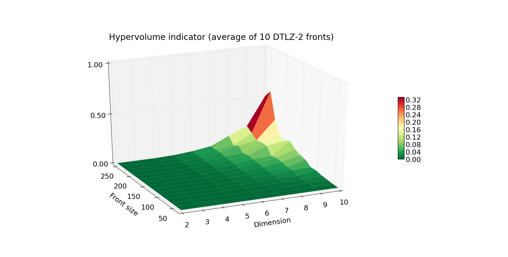

Advanced hypervolume computation and analysis¶
In this tutorial we cover more advanced topics on the hypervolume indicator and comment on the expected performance of its computation in pygmo.
Computing hypervolume using a specific algorithm¶
pygmo uses different algorithms for computing the hypervolume indicator and the hypervolume contributions. By default, it picks the algorithm which is expected to yield the fastest computation with respect to the dimensionality of the given point-set. This selection can be bypassed by passing explicitly the algorithm as parameter of the corresponding method:
>>> import pygmo as pg
>>> hv = pg.hypervolume([[1,0,1],[1,1,0],[-1,2,2]])
>>> hv.compute([5,5,5], hv_algo=pg.hvwfg())
114.0
The code above will compute the hypervolume indicator using the Walking Fish Group algorithm, whereas
>>> hv.compute([5,5,5])
114.0
would use (by default) the hv3d algorithm, since it is expected by pygmo to be faster for three dimensions. The following algorithms are available in pygmo:
Note
Some algorithms may not provide certain functionalities, e.g.: bf_fpras algorithm is designed for efficient approxmation of high dimensional hypervolumes, supports only the “compute” method.
We will discuss the details on the approximated hypervolume in the tutorial Approximating the hypervolume. In this tutorial, instead, we focus only on the exact methods.
Runtime analysis of pygmo hypervolume computation¶
{kind=link}


We have implemented a range of algorithms to choose from when in need to compute hypervolumes.
We utilize this fact to provide users with an efficient computation engine that will most likely pick the
fastest algorithm on default. During the course of some experiments we have measured the capabilities
of our engine for fronts with varying Front size (number of points) and Dimension.
Note
The obtained results are specific to the hardware and the architecture of the computer on which these experiments
were executed. Main idea of the plots in this and the following tutorials is to present the relative scaling of the
execution time for various settings of Front size and Dimension.
The results are shown in the plots reported on the right.
The first plot above shows the running time (average of 10 fronts per given combination of Front size and Dimension)
of computing the front of a DTLZ-2 problem. Plot below, the worst case scenario (maximal time of 10 runs for given Front size
and Dimension). The Z axis as well as the color indicate the execution time in seconds.
As you can see, computation of the hypervolume of 100 points and below is pretty fast, even when facing a 10-dimensional problem.
When you’re designing your own experiment, be wary that the worst case complexity of hypervolume algorithms is exponential.
Although the hypervolume indicator is a very common quality indicator for pareto fronts, many multiple-objective optimizers
require a slightly different figure that evaluates the quality of a given individual within the population.
This is resolved by computing the exclusive contribution of a given individual to the population, and in most cases
boils down to eliminating the individual that contributes the least. For that reason, we would also report the timings for
the least_contributor method.
The increase in the execution time is progressing in a similar fashion, yet the Z axis is now scaled by a factor of 10.
Algorithm comparison¶
In this section discuss a quick comparison of the available algorithms, in support to our choice for the default set of algorithms. Since in many cases, multiple objective problems are either 2 or 3-dimensional, it was important to have a dedicated algorithm for each of these scenarios. At the moment, there are three exact algorithms in PyGMO, two of which are dedicated for certain dimensions:
Even though WFG is regarded one of the state of the art algorithms for hypervolume computation, dedicated algorithms for 2 and 3 dimensions perform better than general purpose ones in terms of running time as shown by the plot reported below, where the hv3d algorithm shows to have a much lower complexity with respect to WFG.

Short summary of algorithms¶
The default algorithm used by pygmo, if not specified otherwise, will be:
hypervolume method |
2D |
3D |
4D and up |
|---|---|---|---|
|
|||
|
The methods supported by the specific algorithms are listed below:
hv_algorithm |
compute |
exclusive |
least_contributor |
greatest_contributor |
contributions |
|---|---|---|---|---|---|
Yes |
Yes |
Yes |
Yes |
Yes |
|
Yes |
Yes |
Yes |
Yes |
Yes |
|
Yes |
Yes |
Yes |
Yes |
Yes |
|
No |
No |
Yes |
Yes |
No |
|
Yes |
No |
No |
No |
No |